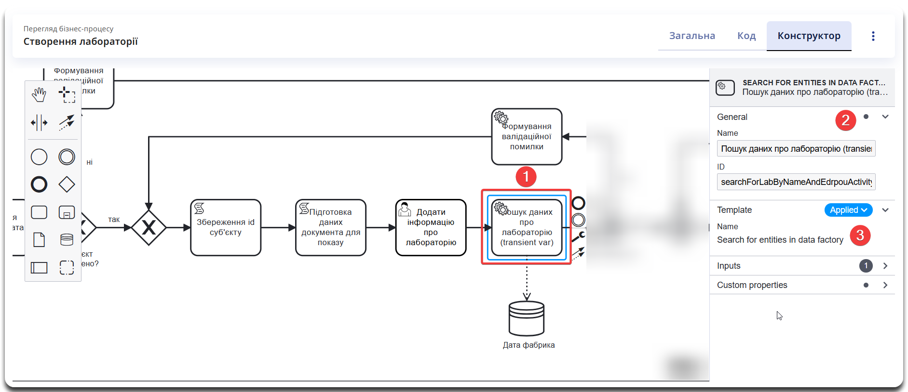
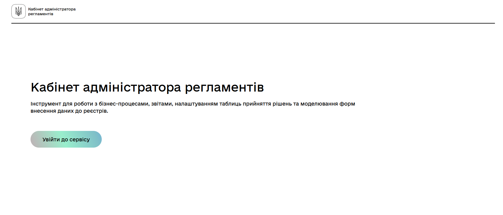
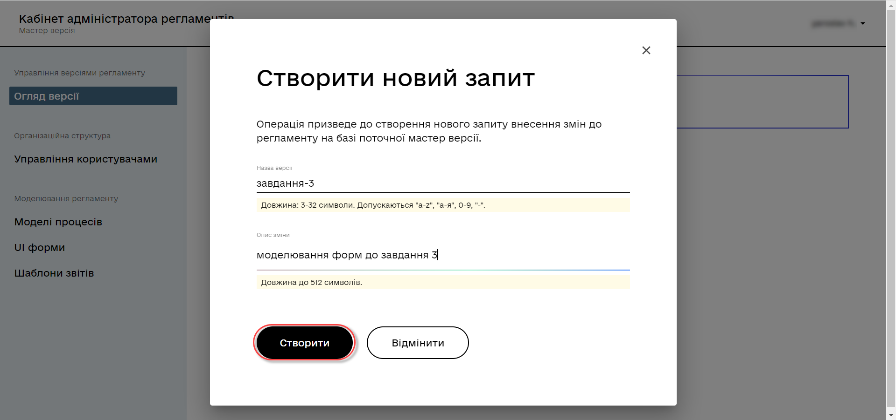
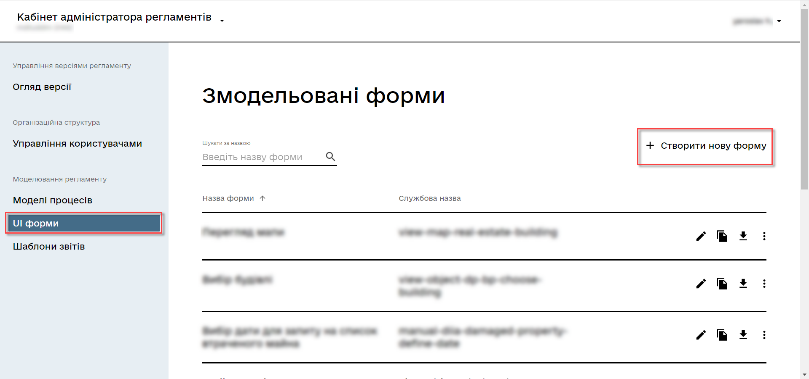
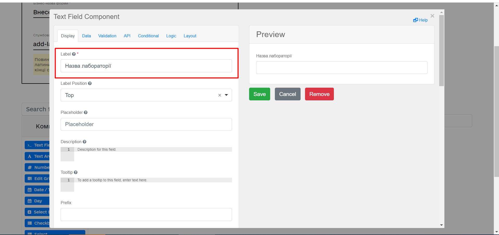
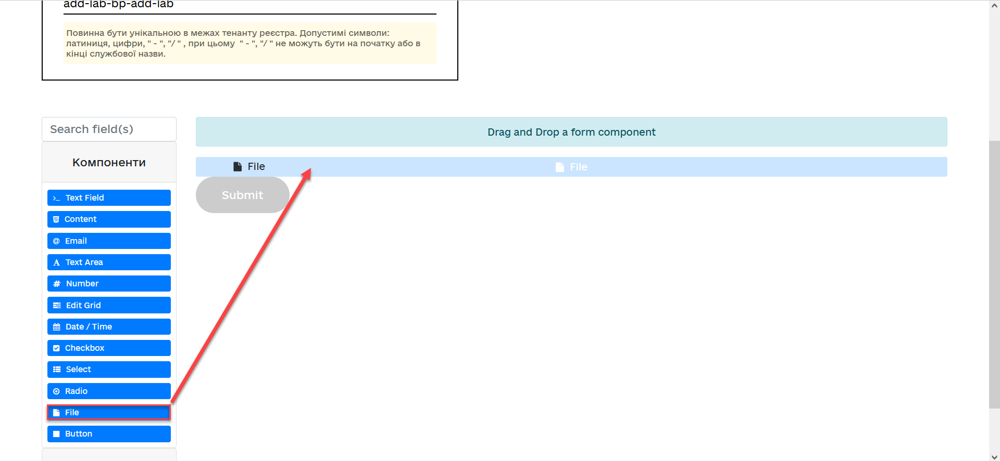
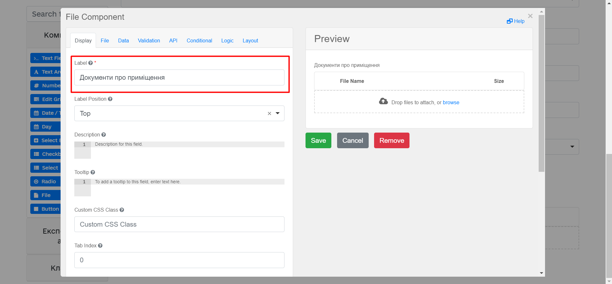
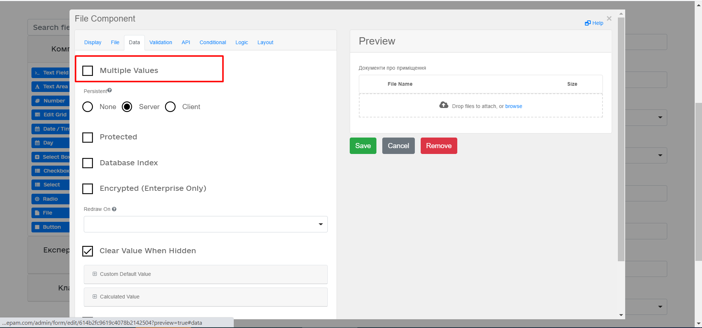
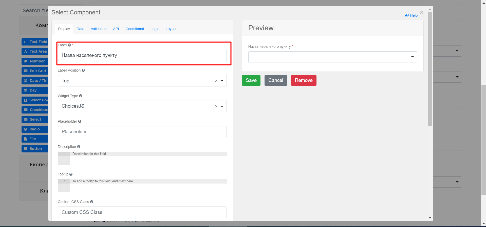
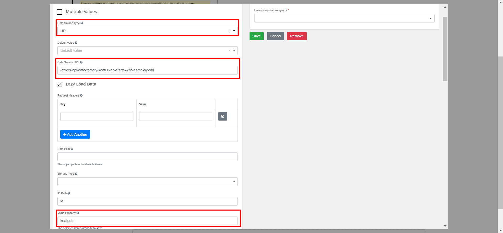

Завдання 3. Моделювання бізнес-процесу з інтеграцією
- 1. Мета завдання
- 2. Передумови
- 3. Процес виконання завдання
- 3.1. Моделювання бізнес-процесу
- 3.1.1. Етапи моделювання бізнес-процесу
- 3.1.2. Створення пулу для бізнес-процесу
- 3.1.3. Створення початкової події
- 3.1.4. Налаштування сервісного завдання для отримання даних про суб’єкт
- 3.1.5. XOR-шлюз "Суб’єкт знайдено?" та моделювання умов розвитку процесу
- 3.1.6. Альтернативна гілка: формування валідаційної помилки та завершення процесу
- 3.1.7. Основна гілка: продовження процесу та подальша обробка знайденого суб’єкта
- 3.1.8. Скрипт збереження ID суб’єкта
- 3.1.9. Скрипт формування даних з кодом отриманого суб’єкта для передзаповнення наступної користувацької форми
- 3.1.10. Створення користувацької задачі для внесення даних про лабораторію
- 3.1.11. Створення сервісної задачі для пошуку даних про лабораторію
- 3.1.12. XOR-шлюз "Дані присутні?" та моделювання умов розвитку процесу
- 3.1.13. Альтернативна гілка: формування валідаційної помилки та повернення на попередній XOR-шлюз
- 3.1.14. Основна гілка: продовження процесу та подальша обробка даних
- 3.1.15. Створення завдання користувача для підпису даних
- 3.1.16. Скрипт для підготовки даних перед записом (transient var)
- 3.1.17. Моделювання сервісного завдання для підпису даних системним ключем
- 3.1.18. Збереження даних у фабрику даних
- 3.1.19. Встановлення статусу завершення бізнес-процесу
- 3.1.20. Створення події завершення бізнес-процесу
- 3.1.21. Збереження змодельованої схеми бізнес-процесу
- 3.2. Моделювання форм
- 3.3. Моделювання доступу до бізнес-процесу
- 3.1. Моделювання бізнес-процесу
- 4. Завантаження файлів регламенту до віддаленого репозиторію Gerrit
- 5. Процедура перевірки виконання завдання
| 🌐 Цей документ доступний українською та англійською мовами. Використовуйте перемикач у правому верхньому куті, щоб змінити версію. |
1. Мета завдання
- Мета цього завдання:
-
-
Навчити моделювати бізнес-процес, що має інтеграцію з фабрикою даних.
-
Навчити моделювати гілки у бізнес-процесі.
-
Навчити моделювати форми та налаштовувати компоненти Select для отримання даних із дата-фабрики.
-
2. Передумови
Перед початком роботи над завданням виконайте ці попередні кроки:
3. Процес виконання завдання
3.1. Моделювання бізнес-процесу
|
Під час моделювання бізнес-процесу необхідно створити та зберегти відповідну BPMN-діаграму. Для цього ви можете використовувати вбудовані можливості Платформи, зокрема Вебінтерфейс моделювання регламенту (Адмін Портал), або сторонні інструменти, наприклад Camunda Modeler. Цей курс зосереджений на детальному підході до розробки регламенту, що дає змогу глибше зрозуміти принципи побудови бізнес-процесів і розширити свою експертизу. Деякі приклади демонструються в Адмін Порталі. Обидва підходи базуються на стандарті BPMN 2.0, тому основні принципи моделювання залишаються однаковими незалежно від вибраного інструменту. Адмін Портал може бути зручнішим вибором, оскільки він містить вбудовані засоби моделювання процесів і форм, актуальний набір інтеграційних розширень для бізнес-процесів (делегатів), а також редактори для написання та редагування коду безпосередньо в середовищі моделювання. Щоб ознайомитися з прикладом, перегляньте файл |
3.1.1. Етапи моделювання бізнес-процесу
В рамках цього завдання розробник має змоделювати бізнес-процес, що складається з наступних етапів:
-
Налаштування сервісного завдання для отримання даних про суб’єкт
-
XOR-шлюз "Суб’єкт знайдено?" та моделювання умов розвитку процесу
-
Альтернативна гілка: формування валідаційної помилки та завершення процесу
-
Створення користувацької задачі для внесення даних про лабораторію
-
XOR-шлюз "Дані присутні?" та моделювання умов розвитку процесу
-
Альтернативна гілка: формування валідаційної помилки та повернення на попередній XOR-шлюз
-
Основна гілка: продовження процесу та подальша обробка даних
-
Моделювання сервісного завдання для підпису даних системним ключем
| Якщо ви використовуєте сторонній додаток, після завершення всіх етапів не забудьте зберегти змодельовану схему бізнес-процесу у відповідну папку з регламентом реєстру. Докладніше див. Збереження змодельованої схеми бізнес-процесу. |
3.1.2. Створення пулу для бізнес-процесу
Змоделюйте пул для бізнес-процесу. Виконайте такі кроки:
| Діаграму бізнес-процесу потрібно моделювати в рамках елемента Pool/Participant. |
-
В інтерфейсі моделювання бізнес-процесів знайдіть елемент Pool/Participant на панелі інструментів ліворуч і перетягніть його до панелі моделювання.
-
Заповніть такі поля відповідними значеннями:
-
У полі Participant name введіть
Створення лабораторії. -
У полі Process ID введіть
feature-add-lab. Це значення також буде використане під час налаштування прав доступу у цьому завданні та відповідатиме параметруprocess_definition_id. -
У полі Process name вкажіть
Створення лабораторії.
-
3.1.3. Створення початкової події
Додайте початкову подію (Start Event), яка визначатиме початок бізнес-процесу. У нашому випадку вона є початковою формою, що дозволяє користувачам вводити необхідні початкові дані перед їх передачею в систему для подальшої обробки.
Налаштуйте подію наступним чином:
- General
-
-
У полі Name введіть назву події. Наприклад,
Початок. -
У полі ID вкажіть ідентифікатор події, наприклад,
start_event. Ви можете залишити значення за замовчуванням або задати власне.
-
- Forms
-
-
У полі Type виберіть
Embedded or External Task Forms. -
У полі Form key вкажіть ключ форми:
feature-search-subject.Ця UI-форма створюється окремо в процесі моделювання форм і надана як приклад у файлі feature-search-subject.json.
-
- Start initiator
-
У полі Initiator введіть
initiator, щоб встановити користувача, який ініціював бізнес-процес.
3.1.4. Налаштування сервісного завдання для отримання даних про суб’єкт
Змоделюйте сервісне завдання (Service Task), яке перевірятиме, чи існують лабораторії з однаковим кодом ЄДРПОУ/РНОКПП або назвою перед додаванням нового запису в систему.
Налаштуйте завдання наступним чином:
- General
-
У полі Name введіть назву завдання. Наприклад,
Отримання суб’єкта з дата-фабрики. - Template
-
Використовуйте інтеграційне розширення (делегат) Пошук сутностей у фабриці даних: Search for entities in data factory для налаштування запита.
- Inputs
-
Передайте вхідні параметри запита у вигляді Map (ключ-значення), де ключами є назви полів форми —
subjectCodeтаsubjectType. Значення ключів можна передати як вирази в один рядок за допомогою JUEL-функціїsubmission().-
subjectCode:${submission('start_event').formData.prop('subjectType').value().equals('ENTREPRENEUR') ? submission('start_event').formData.prop('rnokppCode').value() : submission('start_event').formData.prop('edrpou').value()}Розбір виразу (prettified):
${submission('start_event').formData.prop('subjectType').value().equals('ENTREPRENEUR') ? submission('start_event').formData.prop('rnokppCode').value() : submission('start_event').formData.prop('edrpou').value()}-
submission('start_event').formData.prop('subjectType').value().equals('ENTREPRENEUR')-
Отримує значення
subjectTypeзі стартової подіїstart_event. -
Перевіряє, чи дорівнює це значення
"ENTREPRENEUR".
-
-
Якщо умова
true(тип суб’єкта —ENTREPRENEUR):-
Викликає
submission('start_event').formData.prop('rnokppCode').value()(повертаєrnokppCode).
-
-
Якщо умова
false(інший тип суб’єкта):-
Викликає
submission('start_event').formData.prop('edrpou').value()(повертаєedrpou).
-
-
-
subjectType:${submission('start_event').formData.prop('subjectType').value()}Отримує значення
subjectTypeзі стартової подіїstart_event.
-
- Custom properties
-
-
У полі Resource введіть ендпоінт
subject-equal-subject-type-equal-subject-code. Це відповідник критерію пошуку, який було налаштовано в навчальному завданні 1. -
У полі X-Access-Token вкажіть токен ініціатора процесу, використовуючи JUEL-функцію
initiator():${initiator().accessToken} -
У полі Result variable збережіть результат виконання запита до змінної
subjectResponse.
-
3.1.5. XOR-шлюз "Суб’єкт знайдено?" та моделювання умов розвитку процесу
Додайте XOR-шлюз "Суб’єкт знайдено?", який буде використовуватися для розгалуження процесу на дві гілки залежно від результату пошуку суб’єкта в дата-фабриці. Це рішення приймається на основі умов, що задаються в потоці переходу (Sequence Flow) кожної з гілок.
| XOR-шлюз дозволяє автоматично розділити потік виконання бізнес-процесу, відправляючи його або на подальшу обробку, або на завершення у разі помилки. Коректне налаштування умов на вихідних потоках гарантує правильну логіку роботи бізнес-процесу. |
Моделювання умов на XOR-шлюзі
Щоб правильно змоделювати логіку процесу, виконайте такі кроки:
-
Додайте XOR-шлюз до схеми бізнес-процесу після завдання "Отримання суб’єкта з дата-фабрики".
-
Створіть дві вихідні гілки від XOR-шлюзу:
-
⎇ Основна гілка (суб’єкт знайдено).
-
⎇ Альтернативна гілка (суб’єкт не знайдено).
-
-
Задайте умови для кожної гілки у відповідних потоках переходу (Sequence Flow):
-
Умова "ні" (суб’єкт не знайдено) → процес переходить до формування помилки:
${subjectResponse.value.responseBody.elements().isEmpty()} -
Умова "так" (суб’єкт знайдено) → процес продовжується:
${!subjectResponse.value.responseBody.elements().isEmpty()}
-
Кожна з цих умов використовується в полі Condition Expression відповідного потоку переходу (Sequence Flow).
3.1.6. Альтернативна гілка: формування валідаційної помилки та завершення процесу
Якщо суб’єкт не знайдено, процес має завершитися помилкою. Для цього:
-
Додайте елемент "Формування валідаційної помилки" після XOR-шлюзу.
-
Використовуйте інтеграційне розширення (делегат) Throw validation error для моделювання помилки.
-
Налаштуйте параметри помилки у полі Validation Errors:
{"field": "", "value": "", "message": "Суб'єкт не знайдено"} -
Після формування помилки приєднайте подію завершення процесу (End Event).
Такий підхід гарантує, що у разі відсутності суб’єкта бізнес-процес коректно завершиться із зазначенням помилки.
3.1.7. Основна гілка: продовження процесу та подальша обробка знайденого суб’єкта
Якщо суб’єкт знайдено, бізнес-процес продовжується наступними етапами:
-
Моделювання наступного XOR-шлюзу для додаткової логіки на подальших етапах процесу.
-
Збереження ідентифікатора суб’єкта для подальшої роботи.
-
Підготовка даних документа для показу
-
Додавання інформації про лабораторію.
-
Подальші етапи процесу.
Розглянемо кожен елемент процесу у відповідних підрозділах нижче.
3.1.8. Скрипт збереження ID суб’єкта
Додайте скриптове завдання (Script Task). Це завдання виконує збереження ідентифікатора суб’єкта, отриманого після перевірки його наявності в дата-фабриці. Скриптове завдання дозволяє автоматично обробляти дані без взаємодії з користувачем.
Налаштуйте завдання так:
- General
-
-
У полі Name введіть назву завдання:
Збереження id суб’єкта. -
У полі ID вкажіть унікальний ідентифікатор завдання або залиште значення за замовчуванням.
-
- Script
-
-
У полі Result variable введіть
subjectId, щоб зберегти ідентифікатор суб’єкта для подальшого використання в процесі. -
Натисніть Open script editor та додайте скрипт для обробки отриманого ідентифікатора.
Приклад скриптуexecution.setVariable("subjectId", subjectResponse.value.responseBody.elements().get(0).id);-
Цей скрипт отримує перший елемент з масиву
elements()та зберігає його ID у зміннійsubjectId. Це забезпечує доступ до отриманого ідентифікатора в наступних завданнях бізнес-процесу. -
Отримане значення
subjectIdвикористовується на подальших кроках процесу:
-
-
3.1.9. Скрипт формування даних з кодом отриманого суб’єкта для передзаповнення наступної користувацької форми
Додайте скриптове завдання (Script Task). Це завдання використовується для підготовки даних суб’єкта, отриманого з дата-фабрики, та формування об’єкта payload, який передається для подальшої обробки.
Налаштуйте завдання наступним чином:
- General
-
-
У полі Name введіть назву завдання:
Підготовка даних документа для показу. -
У полі ID вкажіть унікальний ідентифікатор завдання або залиште значення за замовчуванням.
-
- Script
-
Відкрийте Script Editor та додайте наступний скрипт:
Приклад скриптуdef cephData = [:] cephData['edrpou'] = subjectResponse.responseBody.elements().get(0).prop('subjectCode').value() execution.removeVariable('payload') set_transient_variable('payload', S(cephData, 'application/json'))Опис логіки скрипту:
-
Створюється змінна
cephData, яка буде містити необхідні дані про суб’єкта. -
Записується код ЄДРПОУ у поле
edrpouшляхом отримання значенняsubjectCodeз першого елемента відповідіsubjectResponse. -
Видаляється стара змінна
payload, щоб очистити попередні значення. -
Формується новий
payloadу форматі JSON та передається у зміннуpayloadяк тимчасова змінна (transient variable), яка буде використана в наступних етапах бізнес-процесу.
-
3.1.10. Створення користувацької задачі для внесення даних про лабораторію
Додайте завдання користувача (User Task), яке буде використовуватися для внесення даних про лабораторію через форму, яка надається користувачу у процесі виконання бізнес-процесу. Завдання дозволяє отримати від користувача необхідні дані перед наступними етапами обробки.
Налаштуйте завдання наступним чином:
- General
-
-
У полі Name введіть
Додати інформацію про лабораторію. -
У полі ID зазначте
addLabFormActivity. Це унікальний ідентифікатор завдання, який використовується у всьому процесі для посилання на цю задачу.
-
- Template
-
Використовуйте інтеграційне розширення (делегат) Налаштування форми користувача: User form.
- Custom properties
-
-
У полі Form key введіть
feature-add-new-lab. Це службова назва форми, де користувач має вносити дані. Вона має точно збігатися з ідентифікатором відповідної форми у системі. -
У полі Assignee вкажіть
${initiator}, щоб автоматично призначити завдання ініціатору процесу. Це означає, що користувач, який запустив процес, отримає форму для заповнення. -
У полі Form data pre-population передайте
${payload}, щоб автоматично передзаповнити форму даними, підготовленими на попередньому етапі. Ця змінна містить JSON-об’єкт з попередньо отриманими даними, які підставляються у відповідні поля форми.
-
3.1.11. Створення сервісної задачі для пошуку даних про лабораторію
Додайте сервісне завдання (Service Task), яке буде використовуватися для пошуку записів про лабораторію у дата-фабриці. Завдання виконує запит до реєстру та повертає результат у змінну процесу.
Налаштуйте завдання наступним чином:
- General
-
-
У полі Name введіть
Пошук даних про лабораторію (transient var). -
У полі ID зазначте
searchForLabByNameAndEdrpouActivity. Це унікальний ідентифікатор, що використовується для звернення до цього завдання в процесі.
-
- Template
-
Використовуйте інтеграційне розширення (делегат) Пошук сутностей у фабриці даних: Search for entities in data factory.

- Inputs
-
Передайте вхідні параметри запиту у вигляді Map (ключ-значення). Значення ключів можна передати за допомогою JUEL-функцій.
-
У полі виберіть
Map. -
Додайте такі Map entries як параметри пошуку:
Key Value name${submission('addLabFormActivity').formData.prop('name').value()}edrpou${submission('addLabFormActivity').formData.prop('edrpou').value()}
-
- Custom properties
-
-
У полі Resource введіть ендпоінт
laboratory-equal-edrpou-name-count. Це відповідник критерію пошуку лабораторії за назвою та кодом ЄДРПОУ. -
У полі X-Access-Token вкажіть токен виконавця останнього завдання користувача —
${completer('addLabFormActivity').accessToken}.- Використання правильного токена доступу
-
У бізнес-процесах можуть використовуватися два типи токенів доступу:
-
Токен ініціатора процесу (
${initiator().accessToken}) — використовується, якщо доступні дані користувача, який запустив бізнес-процес. -
Токен виконавця останньої користувацької задачі (
${completer('taskDefinitionId').accessToken}) — використовується, коли важливо враховувати роль або дії користувача, що виконав останню задачу в межах процесу.
-
JWT-токен має термін дії 300 секунд. Якщо бізнес-процес триває довше, слід використовувати токен виконавця задачі, щоб уникнути проблем з авторизацією.
Детальніше про використання JUEL-функцій можна переглянути на сторінках:
-
3.1.12. XOR-шлюз "Дані присутні?" та моделювання умов розвитку процесу
Додайте XOR-шлюз "Дані присутні?", який потрібен для розгалуження процесу на дві гілки залежно від результату перевірки наявності лабораторії в дата-фабриці. Це рішення приймається на основі умов, що задаються в потоці переходу (Sequence Flow) кожної з гілок.
Моделювання умов на XOR-шлюзі
Щоб правильно змоделювати логіку процесу, виконайте такі кроки:
-
Додайте XOR-шлюз до схеми бізнес-процесу після завдання "Пошук даних про лабораторію (transient var)".
-
Створіть дві вихідні гілки від XOR-шлюзу:
-
⎇ Основна гілка (дані лабораторії не знайдено).
-
⎇ Альтернативна гілка (дані лабораторії вже присутні).
-
-
Задайте умови для кожної гілки у відповідних потоках переходу (Sequence Flow):
-
Умова "так" (дані лабораторії вже присутні) → процес переходить до формування валідаційної помилки:
${!response.value.responseBody.elements().isEmpty()} -
Умова "ні" (дані лабораторії не знайдено) → процес продовжується:
${response.value.responseBody.elements().isEmpty()}
-
Кожна з цих умов використовується в полі Condition Expression відповідного потоку переходу (Sequence Flow).
3.1.13. Альтернативна гілка: формування валідаційної помилки та повернення на попередній XOR-шлюз
Якщо дані про лабораторію вже присутні, процес має завершитися помилкою. Для цього:
-
Додайте елемент "Формування валідаційної помилки" після XOR-шлюзу.
-
Використовуйте інтеграційне розширення (делегат) Throw validation error для моделювання помилки.
-
Налаштуйте параметри помилки у полі Validation Errors.
Делегат Throw validation error дозволяє виводити декілька повідомлень одночасно.
У разі формування валідаційної помилки користувач побачить два спливних повідомлення (pop-up) приблизно наступного вигляду:
-
name: <введене значення name на формі> "Дані про цю лабораторію вже присутні".
-
edrpou: <введене значення edrpou на формі> "Дані про цю лабораторію вже присутні".
Приклад валідаційної помилки для поля "name"{"field": "name", "value": "${submission('addLabFormActivity').formData.prop('name').stringValue().replaceAll(\"\", \\\"\\\")}", "message": "Дані про цю лабораторію вже присутні"}Приклад валідаційної помилки для поля "edrpou"{"field": "edrpou", "value": "${submission('addLabFormActivity').formData.prop('edrpou').value()}", "message": "Дані про цю лабораторію вже присутні"} -
-
Після формування помилки приєднайте гілку, яка приводитиме альтернативний потік на попередній XOR-шлюз.
Такий підхід гарантує, що у разі наявності лабораторії бізнес-процес піде альтернативним потоком із зазначенням помилки.
3.1.14. Основна гілка: продовження процесу та подальша обробка даних
Якщо лабораторії немає у дата-фабриці, бізнес-процес продовжується наступними етапами:
-
Моделювання наступного XOR-шлюзу для додаткової логіки на подальших етапах процесу.
-
Підписання даних про лабораторію.
-
Збереження даних до БД та завершення процесу.
Розглянемо кожен елемент процесу у відповідних підрозділах нижче.
3.1.15. Створення завдання користувача для підпису даних
Додайте завдання користувача (User Task) для накладання КЕП (кваліфікованого електронного підпису) на внесені дані про лабораторію перед їх передачею в систему. Цю дію виконує посадова особа або надавач послуг, тому необхідно використовувати делегат Підписання даних КЕП надавача послуг: Officer Sign Task при налаштуванні завдання.
| Якщо дані мають бути підписані отримувачем послуг (громадянином), потрібно використовувати делегат Підписання даних КЕП отримувача послуг: Citizen Sign Task. |
Налаштуйте завдання наступним чином:
- General
-
-
У полі Name введіть
Підписати дані про лабораторію. -
У полі ID зазначте
signLabFormActivity. Це унікальний ідентифікатор завдання, який використовується для звернення до нього в межах бізнес-процесу.
-
- Template
-
Використовуйте делегат Підписання даних КЕП надавача послуг: Officer Sign Task, який дозволяє посадовій особі підписувати дані через кваліфікований електронний підпис.
- Custom properties
-
-
У полі Form key введіть
feature-sign-added-lab. Це службова назва форми, у якій користувач підписує внесені дані. Вона має точно збігатися з ідентифікатором відповідної форми у системі. -
У полі Assignee вкажіть
${initiator}, щоб автоматично призначити завдання ініціатору процесу. Це означає, що користувач, який запустив процес, отримає форму для накладання КЕП. -
У полі Form data pre-population передайте
${submission('addLabFormActivity').formData}, щоб автоматично передзаповнити форму даними, які були внесені на попередньому етапі.
-
3.1.16. Скрипт для підготовки даних перед записом (transient var)
Додайте скриптове завдання (Script Task), яке використовується для перетворення та підготовки підписаних даних перед їх записом у систему. Скрипт виконує очищення, нормалізацію та форматування даних, необхідних для коректного збереження у фабриці даних.
Налаштуйте завдання наступним чином:
- General
-
-
У полі Name введіть
Підготовка даних для запису (transient var). -
У полі ID зазначте
convertSignFormDataToDataFactoryFormatActivity. Це унікальний ідентифікатор завдання, який використовується для звернення до нього в межах бізнес-процесу.
-
- Script
-
Відкрийте Script Editor та додайте наступний скрипт:
Приклад скриптуdef signedFormData = submission('signLabFormActivity').formData signedFormData.prop('oblast', signedFormData.prop('oblast').prop('code').value()) signedFormData.prop('koatuuId', signedFormData.prop('koatuu').prop('koatuuId').value()) signedFormData.deleteProp('koatuu') signedFormData.prop('ownershipId', signedFormData.prop('ownership').prop('ownershipId').value()) signedFormData.deleteProp('ownership') signedFormData.prop('kopfgId', signedFormData.prop('kopfg').prop('kopfgId').value()) signedFormData.deleteProp('kopfg') signedFormData.prop('subjectId', subjectId) execution.removeVariable('dataPayload') set_transient_variable('dataPayload', signedFormData)Опис логіки скрипту:
-
Отримання підписаних даних: дані, внесені та підписані посадовою особою у завданні
signLabFormActivity, зберігаються у зміннійsignedFormData. -
Нормалізація значень:
-
Перетворюється значення
oblast, замінюючи його наcode. -
Окремо виділяються значення
koatuuId,ownershipIdтаkopfgIdіз вкладених структур, а самі вкладені властивості (koatuu,ownership,kopfg) видаляються для спрощення структури.
-
-
Додавання
subjectId: додається ідентифікатор суб’єкта (subjectId), який використовується для прив’язки даних до відповідного суб’єкта. -
Передача результату:
-
Видаляється стара змінна
dataPayload, щоб очистити попередні значення. -
Оновлений об’єкт
signedFormDataпередається у тимчасову змінну (transient variable)dataPayloadдля подальшого використання у бізнес-процесі.
-
-
3.1.17. Моделювання сервісного завдання для підпису даних системним ключем
Створіть сервісну задачу (Service Task) для накладання системного підпису на підготовлені дані перед їх передачею на збереження. Для підпису використовується делегат System signature by DSO service, який забезпечує підписання даних із використанням внутрішнього ключа системи.
Налаштуйте завдання наступним чином:
- General
-
-
У полі Name введіть
Підписати дані системним ключем. -
У полі ID залиште значення за замовчуванням або вкажіть унікальний ідентифікатор завдання.
-
- Template
-
Використовуйте інтеграційне розширення (делегат) System signature by DSO service.
- Custom properties
-
-
У полі Payload передайте дані, що підлягають підписанню —
${dataPayload}. Це змінна, яка містить підготовлені та нормалізовані дані, отримані після попередніх етапів процесу. -
У полі X-Access-Token source передайте токен доступу виконавця останньої користувацької задачі:
${completer('signLabFormActivity').accessToken}Тут використовується функція completer(), що отримує токен користувача, який виконав задачуsignLabFormActivity.- Використання правильного токена доступу
-
У бізнес-процесах можуть використовуватися два типи токенів доступу:
-
Токен ініціатора процесу (
${initiator().accessToken}) — використовується, якщо доступні дані користувача, який запустив бізнес-процес. -
Токен виконавця останньої користувацької задачі (
${completer('taskDefinitionId').accessToken}) — використовується, коли важливо враховувати роль або дії користувача, що виконав останню задачу в межах процесу.
-
JWT-токен має термін дії 300 секунд. Якщо бізнес-процес триває довше, слід використовувати токен виконавця задачі, щоб уникнути проблем з авторизацією.
Детальніше про використання JUEL-функцій можна переглянути на сторінках:
-
У полі Result variable зазначте змінну для збереження отриманого підпису —
system_signature_ceph_key. Це змінна, в яку записується результат підписання даних системним ключем.
-
Цей підхід гарантує, що дані підписуються системним ключем без необхідності додаткових дій з боку користувача, забезпечуючи автоматизацію процесу.
3.1.18. Збереження даних у фабрику даних
Змоделюйте сервісне завдання (Service Task), яке використовується для *збереження оброблених і підписаних даних в операційній БД реєстру.
Налаштуйте завдання наступним чином:
- General
-
-
У полі Name введіть
Зберегти дані в Дата фабрику. -
У полі ID зазначте
sendLabToDataFactoryActivityабо залиште значення за замовчуванням.
-
- Template
-
Використовуйте інтеграційне розширення (делегат) Створення сутності у Фабриці даних: Create entity in data factory.
- Custom properties
-
-
У полі Resource введіть значення
laboratory. Це вказує, що дані будуть збережені у відповідному ресурсі (таблиці) у фабриці даних.У полі Resource необхідно використовувати назви ресурсів/ендпоінтів у kebab-case (через дефіс -), наприклад,laboratory-test, а неlaboratory_test(як у БД). -
У полі Payload передайте дані для збереження —
${dataPayload}. Це змінна, що містить підготовлені та підписані дані, які необхідно передати в базу даних. -
У полі X-Access-Token передайте токен користувача, який підписував дані:
${completer('signLabFormActivity').accessToken}- Використання правильного токена доступу
-
У бізнес-процесах можуть використовуватися два типи токенів доступу:
-
Токен ініціатора процесу (
${initiator().accessToken}) — використовується, якщо доступні дані користувача, який запустив бізнес-процес. -
Токен виконавця останньої користувацької задачі (
${completer('taskDefinitionId').accessToken}) — використовується, коли важливо враховувати роль або дії користувача, що виконав останню задачу в межах процесу.
-
JWT-токен має термін дії 300 секунд. Якщо бізнес-процес триває довше, слід використовувати токен виконавця задачі, щоб уникнути проблем з авторизацією.
Детальніше про використання JUEL-функцій можна переглянути на сторінках:
Це забезпечує правильну авторизацію для операції збереження.
-
У полі X-Digital-Signature source вкажіть цифровий підпис, накладений користувачем:
${sign_submission('signLabFormActivity').signatureDocumentId}Використовуйте JUEL-функцію sign_submission()для передачі підписаних даних з форми. -
У полі X-Digital-Signature-Derived source зазначте системний підпис, накладений автоматично —
${system_signature_ceph_key}. Це підпис, накладений на попередньому етапі завданнямSystem signature by DSO service. -
У полі Result variable вкажіть змінну, до якої записується відповідь від сервера —
response. Вона міститиме результат виконання операції збереження.
-
3.1.18.1. Логіка роботи
-
Дані (
dataPayload) передаються до фабрики даних у ресурсlaboratory. -
Використовується токен виконавця
signLabFormActivity, щоб підтвердити права на операцію збереження. -
Передаються користувацький підпис (
X-Digital-Signature source) та системний підпис (X-Digital-Signature-Derived source). -
Фабрика даних приймає запит та створює новий запис у базі даних.
-
У змінну
responseзаписується результат виконання операції (успіх/помилка).
| Це завдання є фінальним етапом у процесі створення запису про лабораторію та гарантує, що всі дані успішно передаються та зберігаються в операційній базі даних реєстру. |
3.1.19. Встановлення статусу завершення бізнес-процесу
Створіть сервісне завдання (Service Task), що дозволить визначати підсумковий статус бізнес-процесу. Завдання відображає, чи успішно завершився процес, та задає відповідний статус для подальшого моніторингу.
Налаштуйте завдання наступним чином:
- General
-
-
У полі Name введіть
Результат виконання "Лабораторія створена". -
У полі ID зазначте
defineBusinessProcessStatusActivityабо залиште значення за замовчуванням.
-
- Template
-
Використовуйте інтеграційне розширення (делегат) Визначення статусу виконання бізнес-процесу: Define business process status.
- Custom properties
-
У полі Status введіть текст. Наприклад,
Лабораторія створена. Це буде відображено у поліСтатус виконаного бізнес-процесуна порталах надавачів та отримувачів послуг.Поля Name та Status мають інформативне значення. Результат виконання процесу із зазначеним статусом буде показано у Кабінеті користувача або надавача послуг, повідомляючи як завершилось виконання певного бізнес-процесу.
Зображення 3. Приклад статусу із нотифікацією про виконання певного завдання процесу. Відображення статусу завершення процесу виконується за аналогічним принципом
| Це завдання є фінальним кроком у бізнес-процесі, що підтверджує успішне створення лабораторії. |
3.1.20. Створення події завершення бізнес-процесу
Створіть подію, яка завершуватиме бізнес-процес (End Event). Для цього виконайте наступні кроки:
-
Приєднайте та налаштуйте подію завершення бізнес-процесу.
-
На панелі налаштувань праворуч для параметра Name вкажіть значення
Лабораторія створена.
| У результаті маємо змодельований бізнес-процес з інтеграцією Фабрики даних. |
3.1.21. Збереження змодельованої схеми бізнес-процесу
3.1.21.1. Якщо моделюєте у Вебінтерфейсі адміністратора регламенту
Після завершення моделювання збережіть зміни, натиснувши кнопку у правому верхньому куті вебінтерфейсу.
-
Якщо ви працюєте безпосередньо у
master-версії регламенту, зміни буде застосовано автоматично після збереження. -
Якщо ви працюєте у версії-кандидаті, застосуйте зміни до
master-версії вручну: Детальніше про застосування змін.
3.1.21.2. Якщо моделюєте у сторонньому BPMN-додатку або Camunda Modeler
Після завершення моделювання збережіть схему бізнес-процесу з назвою feature-add-lab.bpmn у регламентну папку bpmn у Gerrit-репозиторії.
Щоб зберегти файл у Camunda Modeler:
-
Відкрийте меню .
-
Введіть назву
feature-add-lab.bpmn, вкажіть шлях до папкиbpmnі натисніть Save.
3.2. Моделювання форм
|
На етапі моделювання форм необхідно створити та прив’язати JSON-форми до попередньо змодельованих задач в рамках бізнес-процесу. Форми прив’язуються до бізнес-процесів за службовою назвою. Використовуйте готові JSON-файли зі змодельованими формами для наочного прикладу: |
3.2.1. Налаштування стартової форми бізнес-процесу
-
Увійдіть до застосунку Кабінет адміністратора регламентів.
 -
Створіть нову кандидат-версію Завдання 3.

-
Перейдіть до розділу UI-форми. Щоб створити нову форму для бізнес-процесу, натисніть кнопку Створити нову форму.

-
На вкладці Загальна вкажіть бізнес- і службову назву форми:
-
Бізнес-назва форми:
Пошук суб’єкта в реєстрі. -
Службова назва форми:
feature-search-subject. Службова назва має збігатися зі значенням поля Form key у початковій події (початковій формі) бізнес-процесу.
-
3.2.1.1. Опис форми: Конструктор
Відкрийте вкладку Конструктор та виконайте налаштування трьох основних компонентів UI-форми:
-
Тип суб’єкта — перемикач (Radio Component), який визначає, чи є суб’єкт ФОП (Фізична особа-підприємець) або Юридичною особою.
-
Код РНОКПП — текстове поле для введення коду фізичної особи-підприємця.
-
Код ЄДРПОУ — текстове поле для введення коду юридичної особи.
У результаті моделювання форма повинна виглядати так:
3.2.1.2. Налаштування компонента "Тип суб’єкта" (Radio Component)
Компонент Radio використовується для вибору між двома типами суб’єкта:
-
Фізична особа-підприємець (значення:
ENTREPRENEUR) -
Юридична особа (значення:
LEGAL)
Перетягніть компонент Radio з бокового меню ліворуч на панель моделювання та виконайте наступні налаштування на відповідних вкладках:
-
Display
-
Data
-
Validation
-
API
На цій вкладці вкажіть основні параметри:
-
Label (Мітка):
Тип суб’єкта -
Label Position (Розташування мітки):
Top -
Options Label Position (Розташування міток опцій):
Right -
Inline Layout (Розташування в рядок): ✅ Увімкнено
На цій вкладці налаштуйте значення, які передаються у бізнес-процес:
-
Default Value (Значення за замовчуванням): Немає (користувач обирає самостійно)
-
Values (Опції):
-
Фізична особа-підприємець→ENTREPRENEUR -
Юридична особа→LEGAL
-
-
Clear Value When Hidden (Очищувати значення, якщо приховано): ✅ Увімкнено
На цій вкладці задайте обов’язковість заповнення:
-
Required (Обов’язкове поле): ✅ Увімкнено
-
Custom Error Message (Повідомлення про помилку):
Поле "Тип суб’єкта" є обов’язковим.
Ім’я поля в структурі даних, яка буде відправлена при відправленні даних форми. Також це ім’я поля в структурі даних яким передзаповнюється форма. Поточне значення цього поля можна перевірити в структурі даних, яка відображається на вкладці Запит в інтерфейсі розробки форм.
-
Property Name:
subjectType
| На цьому етапі Radio компонент "Тип суб’єкта" повністю налаштований. Далі необхідно налаштувати текстові поля "Код РНОКПП" та "Код ЄДРПОУ". |
3.2.1.3. Налаштування текстового поля "Код РНОКПП" (Textfield Component)
Компонент Text Field використовується для введення текстових даних в один рядок.
-
Display
-
Validation
-
API
-
Logic
-
Table
На цій вкладці вкажіть основні параметри:
-
Label (Мітка):
Код РНОКПП -
Label Position (Розташування мітки):
Top -
Placeholder (Текст підказки у полі):
Placeholder -
Description (Опис поля): Порожнє
-
Tooltip (Підказка): Порожнє
На цій вкладці задайте правила валідації:
-
Required (Обов’язкове поле): ✅ Увімкнено
-
Maximum Length (Максимальна довжина):
10
Ім’я поля в структурі даних, яка буде відправлена при надсиланні форми. Також це ім’я поля в структурі даних, яким передзаповнюється форма.
-
Property Name (Ім’я API-параметра у системі):
rnokppCode
На цій вкладці використовується для динамічного відображення поля залежно від вибору користувача.
Логіка відображення поля наступна:
show = (data.subjectType === 'INDIVIDUAL' || data.subjectType === 'ENTREPRENEUR');-
Якщо
subjectTypeдорівнює'INDIVIDUAL'або'ENTREPRENEUR', то полеКод РНОКППвідображається. -
В іншому випадку воно приховується.
Ця вкладка використовується для налаштування відображення поля у таблиці.
-
Table View: ✅ Увімкнено (значення буде відображатися у списку поданих форм).
| На цьому етапі текстове поле Код РНОКПП повністю налаштоване. Далі необхідно налаштувати поле "Код ЄДРПОУ". |
3.2.1.4. Налаштування тестового поля "Код ЄДРПОУ" (Textfield Component)
Налаштування текстового поля "Код ЄДРПОУ" майже ідентичні з налаштуваннями текстового поля "Код РНОКПП", але мають деякі відмінності.
-
Display
-
Validation
-
API
-
Logic
На цій вкладці вкажіть основні параметри:
-
Label (Мітка):
Код ЄДРПОУ -
Label Position (Розташування мітки):
Top -
Placeholder (Текст підказки у полі):
Placeholder -
Description (Опис поля): Порожнє
-
Tooltip (Підказка): Порожнє
На цій вкладці задайте правила валідації:
-
Required (Обов’язкове поле): ✅ Увімкнено
-
Maximum Length (Максимальна довжина):
8
Ім’я поля в структурі даних, яка буде відправлена при надсиланні форми. Також це ім’я поля в структурі даних, яким передзаповнюється форма.
-
Property Name:
edrpou

На цій вкладці використовується для динамічного відображення поля залежно від вибору користувача.
Логіка відображення поля наступна:
show = (data.subjectType === 'LEGAL');-
Якщо
subjectTypeдорівнює'LEGAL', то полеКод ЄДРПОУвідображається. -
В іншому випадку воно приховується.
| На цьому етапі текстове поле Код ЄДРПОУ повністю налаштоване. Далі необхідно перейти до перегляду форми. |
3.2.1.5. Перегляд форми
Перейдіть на вкладку Перегляд, щоб ознайомитися з інтерфейсом UI-форми, яку побачать користувачі у їхніх кабінетах під час виконання бізнес-процесу.
На цьому етапі можна протестувати базову взаємодію з формою: заповнити поля введення, перевірити налаштовані параметри та оцінити загальний вигляд інтерфейсу.
3.2.1.6. Вкладка "Запит"
Перейдіть на вкладку Запит, щоб переглянути сформований JSON-об’єкт, який буде передано у Фабрику даних після заповнення форми.
Ця вкладка відображає дані, що були введені або обрані на вкладці Перегляд. Наприклад:
-
Якщо ви обрали значення у випадному списку або натиснули radio button на вкладці Перегляд, відповідне значення відобразиться у JSON-структурі.
-
Якщо ви ввели текстові дані у поля вводу, вони також відобразяться тут.
Таким чином, вкладка Запит дає змогу перевірити, які саме параметри будуть передані у Фабрику даних під час виконання бізнес-процесу. Це корисно для тестування та візуальної валідації перед відправленням запиту.
3.2.2. Створення форми для внесення даних про лабораторію
У вебінтерфейсі розробника регламенту створіть нову форму та виконайте наступні кроки:
-
На вкладці Загальна:
-
У полі
Бізнес-назва формивкажіть назву, що відповідає назві змодельованої користувацької задачі —Додати інформацію про лабораторію. -
Заповніть поле
Службова назва формизначеннямfeature-add-new-lab(має відповідати значенню поляForm keyтієї ж користувацької задачі).

-
-
Перейдіть до вкладки Конструктор.
-
З панелі компонентів ліворуч перетягніть компонент Text Field до панелі моделювання та виконайте подальші налаштування:

-
У новому вікні перейдіть на вкладку Display, заповніть поле
LabelзначеннямНазва лабораторії:
-
Перейдіть на вкладку Validation та встановіть прапорець для параметра
Required—true:
-
Перейдіть на вкладку API та заповніть поле
Property Nameзначеннямname.Значення поля
Property Nameповинно бути унікальним. -
Натисніть кнопку
Saveдля збереження змін:
Аналогічно змоделюйте текстові поля (Text Field) для
Код ЄДРПОУ або РНОКПП,Адреса,Телефон,Керівник. -
-
З панелі компонентів зліва перетягніть компонент Checkbox до панелі моделювання та виконайте подальші налаштування:

-
Перейдіть на вкладку Display та заповніть поле
LabelзначеннямНаявність акредитації:
-
Перейдіть на вкладку API та заповніть поле
Property NameзначеннямaccreditationFlag. -
Натисніть кнопку
Saveдля збереження змін:
-
-
З панелі компонентів зліва перетягніть компонент File до панелі моделювання та виконайте подальші налаштування:

-
Перейдіть на вкладку Display та заповніть поле
LabelзначеннямДокументи про приміщення:
-
Перейдіть на вкладку File та заповніть наступні поля:
-
у полі
StorageвкажітьUrl; -
у полі
Urlвкажіть/documents;
-
у полі вкажіть
File Patternвкажітьapplication/pdf,image/jpeg,image/png; -
у полі
File Minimum sizeвкажіть0KB; -
у полі
File Maximum sizeвкажіть50MB.
-
-
Перейдіть на вкладку Data та залишіть поле
Multiple Valuesпорожнім, тобто зі значеннямFalse:
-
Перейдіть на вкладку API та заповніть поле
Property NameзначеннямpremisesFile. -
Натисніть кнопку
Saveдля збереження змін:
-
-
Виконайте налаштування для отримання інформації з довідника "Область". З панелі компонентів зліва перетягніть компонент Select до панелі моделювання.

-
Перейдіть на вкладку Display та заповніть поле
LabelзначеннямОбласть:
-
Перейдіть на вкладку Data та заповніть наступні поля:
-
у полі
Data Source Typeвкажіть значенняURL; -
у полі
Data Source URLвкажіть/officer/api/data-factory/koatuu-obl-contains-name,
-
де:
-
/officer— вказує, що запит до довідника буде виконано із Кабінету посадової особи; -
/api/data-factory/— вказує шлях до фабрики даних; -
koatuu-obl-contains-name— назва критерію пошуку (search condition) для отримання даних із довідника областей, що був змодельований та доданий до репозиторію.
-
у полі
Value Propertyвведіть значенняcode;
-
у полі
Item Templateвкажіть<span>{{ item.name }}</span>,де
name— назва параметра, що повертає критерій пошуку (search condition) та відображатиметься на формі.-
Перейдіть на вкладку Validation та встановіть прапорець для параметра
Required—True. -
Перейдіть на вкладку API та заповніть поле
Property Nameзначеннямoblast.
-
Натисніть кнопку
Saveдля збереження змін.
-
-
-
Налаштуйте залежний компонент Select. З панелі компонентів зліва перетягніть компонент Select до панелі моделювання та виконайте подальші налаштування для отримання інформації з довідника:
-
Перейдіть на вкладку Display та заповніть поле
LabelзначеннямНазва населеного пункту.
-
Перейдіть на вкладку Data та заповніть наступні поля:
-
у полі
Data Source TypeвведітьURL; -
у полі
Data Source URLвведіть/officer/api/data-factory/koatuu-np-starts-with-name-by-obl,де:
-
/officer— вказує, що запит до довідника буде виконано із Кабінету посадової особи; -
/api/data-factory/— вказує шлях до фабрики даних; -
koatuu-np-starts-with-name-by-obl— назва критерію пошуку (search condition) для отримання даних із довідника населених пунктів, що був змодельований та доданий до репозиторію.
-
-
у полі
Value PropertyвкажітьkoatuuId;
-
у полі
Filter Queryвкажітьlevel1={{data.oblast.code}},де:
-
level1— вхідний параметр для ендпоінтуkoatuu-np-starts-with-name-by-obl; -
{{data.oblast.code}}-- шлях для отримання данихdata.Property name.Value Propertyіз попереднього компонента Select.
-
-
у полі
Item Templateвкажіть<span>{{ item.name }}</span>,де
name— назва параметра, що повертає search condition та буде відображений на формі. -
у полі
Refresh options Onвведіть значенняОбласть(поточне значення буде видалено, коли значення в поліОбластьзміниться); -
встановіть прапорець для параметра
Clear Value On Refresh Options—True:
-
-
Перейдіть на вкладку Validation та встановіть прапорець для параметра
Required—True. -
Перейдіть на вкладку API та заповніть поле
Property Nameзначеннямkoatuu. -
Натисніть кнопку
Save, щоб зберегти зміни.
-
-
Виконайте налаштування для отримання даних із довідника форм власності. Для цього з панелі компонентів ліворуч перетягніть компонент Select до панелі моделювання та виконайте подальші налаштування для отримання інформації з довідника.
-
Перейдіть на вкладку Display та заповніть поле
LabelзначеннямФорма власності.
-
Перейдіть на вкладку Data та заповніть наступні поля:
-
у полі
Data Source Typeвкажіть значенняURL; -
у полі
Data Source URLвкажіть/officer/api/data-factory/ownership-contains-name,де:
-
/officer— вказує, що запит до довідника буде виконано із Кабінету посадової особи; -
/api/data-factory/— вказує шлях до фабрики даних; -
ownership-contains-name— назва критерію пошуку (search condition) для отримання даних із довідника форм власності, що був змодельований та доданий до репозиторію.
-
-
у полі
Value PropertyвкажітьownershipId;
-
у полі
Item Templateвкажіть<span>{{ item.name }}</span>,де
name— назва параметра, що повертає критерій пошуку (search condition) та відображатиметься на формі.
-
-
На вкладці Validation встановіть прапорець для параметра
Required—true; -
На вкладці API заповніть поле
Property Nameзначеннямownership. -
Натисніть кнопку
Saveдля збереження змін.
-
-
Збережіть форму, натиснувши кнопку
Створити формуу правому верхньому куті:
3.2.3. Створення форми для підписання даних КЕП
Після завершення попереднього етапу зі створенням форми для внесення даних, створіть ще одну форму для підпису даних.
Для цього скопіюйте попередньо змодельовану форму, натиснувши іконку копіювання — це дозволить створити форму із готового шаблону.

Налаштуйте параметри форми:
-
Введіть назву відповідної користувацької задачі
Підписати дані про лабораторіюв поліБізнес-назва форми; -
Заповніть поле
Службова назва формизначеннямfeature-sign-added-lab(відповідає значенню поляForm keyтієї ж користувацької задачі); -
В усіх компонентах:
-
На вкладці Display встановіть прапорець для параметра Disabled.
-
Натисніть кнопку
Saveдля збереження змін.
-
-
Збережіть форму, натиснувши кнопку Створити форму у правому верхньому куті.
3.2.4. Збереження змодельованих UI-форм
3.2.4.1. Якщо працюєте з регламентом в Адмін Порталі та Gerrit-репозиторії
Після завершення налаштування UI-форми збережіть її у локальному Gerrit-репозиторії, виконавши наступні дії:
-
Перейдіть до Кабінету адміністратора регламентів.
-
Відкрийте розділ UI-форми.
-
Завантажте необхідні форми, натиснувши іконку завантаження.
-
Помістіть отримані файли до регламентної папки
formsу локальному Gerrit-репозиторії.
3.2.4.2. Якщо працюєте безпосередньо у вебінтерфейсі
Збережіть зміни, натиснувши кнопку Створити форму або Зберегти зміни у вкладці моделювання форми.
-
Якщо ви працюєте у
master-версії регламенту, зміни буде застосовано автоматично після збереження. -
Якщо ви працюєте у версії-кандидаті, застосуйте зміни до
master-версії вручну: Детальніше про застосування змін.
3.3. Моделювання доступу до бізнес-процесу
|
На цьому етапі необхідно надати доступ до бізнес-процесу в Кабінеті користувача/надавача послуг для стандартної ролі Параметри доступу налаштовуються у конфігураційному файлі, що має назву |
Відредагуйте файл bp-auth/officer.yml додавши наступні параметри:
authorization:
realm: 'officer'
process_definitions:
- process_definition_id: 'add-lab-test'
process_name: 'Створення лабораторії'
process_description: 'Регламент для створення лабораторій'
roles:
- officer
- process_definition_id: 'feature-add-lab'
process_name: 'Створення лабораторії'
process_description: 'Регламент для створення лабораторій'
roles:
- officerЗбереження файлу з налаштуваннями доступу
Збережіть файл officer.yml до регламентної папки bp-auth проєкту в локальному Gerrit-репозиторії.
4. Завантаження файлів регламенту до віддаленого репозиторію Gerrit
Для успішного розгортання бізнес-процесу, форм, а також застосування правильних налаштувань доступу до бізнес-процесу у цільовому середовищі, адміністратор регламенту має завантажити збережені локально файли регламенту реєстру до віддаленого сховища коду Gerrit.
Для цього виконайте кроки з інструкції Операції з регламентом в Gerrit.
На основі наданого контексту, розгляньте процедуру перевірки виконання завдання розробки регламенту у наступному розділі.
5. Процедура перевірки виконання завдання
Ця процедура забезпечить систематичний підхід до перевірки виконання завдань розробки та інтеграції бізнес-процесів, а також допоможе забезпечити високу якість кінцевого продукту.
-
Отримання тестових КЕП-ключів для автентифікації та підпису даних.
Зверніться до технічного адміністратора Платформи для отримання тестових ключів для надавачів послуг. Ці ключі забезпечать доступ до розроблених бізнес-процесів у тестовому середовищі.
-
Налаштування користувача.
Використайте користувача з правами, що відповідають ролі надавача послуг, та забезпечте, що атрибути користувача відповідають тим, що вказано в тестових ключах: ПІБ —
fullName, ЄДРПОУ —edrpouта РНОКПП —drfo). -
Перевірка в Кабінеті надавача послуг (користувача).
-
Вхід у систему: увійдіть в Кабінет надавача послуг за допомогою профілю користувача з відповідними правами та тестовими ключами.
-
Моделювання бізнес-процесів: перевірте, чи правильно модельовані бізнес-процеси, включаючи інтеграцію з фабрикою даних та реалізацію гілок у бізнес-процесах.
-
Форми та компоненти Select: переконайтеся, що форми налаштовані коректно та компоненти Select працюють належним чином для отримання даних з фабрики даних.
-
-
Зворотний зв’язок:
Повідомте про будь-які помічені недоліки або відхилення від очікуваних результатів.